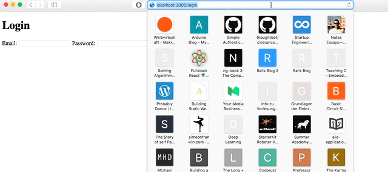

In this post, I want to help beginners to get started with user authentification in rails.
Firstly, I want to prevent some confusion with authentification vs authorization.
Authentification
- Who is the user?
- Is the user really he/she pretends to be?
- => Username + password
Authorization
- What is the user allowed to do?
- Has the user permission to access resource X?
- => Different user roles like admin/normal user/guest/…
Indeed, there are quite a lot of libraries out there who help you with user authentification and authorization. But in order to really understand how authentification works, you need to write the code from scratch at least once. That’s exactly what I want to show you in this post. At the end I will introduce you to some useful libraries though.
I assume you know the basics about ruby and rails and won’t explain every single line of code. But feel free to ask upcoming questions.
rails new authentification_from_scratch --database=postgresql
rails generate model user name email password_digest
We will use a gem called “bicrypt” to encrypt our passwords. The Gem requires us to have a attribute “password_digest”. Therefore watch out for typos!
rake db:create
rake db:migrate
<-- config/routes.erb -->
Rails.application.routes.draw do
#root url => First page after login
root to: 'users#show'
#Url for signup page => posts form parameters to users#create
get '/signup' => 'users#new'
#Form from users#new will post to users#create
post '/users' => 'users#create'
end
rails generate controller users
<-- app.controllers/users_controller.erb -->
class UsersController < ApplicationController
def show
end
def new
end
def create
end
end
<-- app/views/users/new.html.erb -->
<h1>Signup here!</h1>
<%= form_for :user, :url: '/users' do |f| %>
Name: <%= f.text_field :name %>
Email <%= f.text_field :email %>
Password: <%= f.password_field :password %>
Password Confirmation: <%= f.password_field :password_confirmation %>
<%= f.submit "Submit" %>
<% end %>
The password_confirmation field is not required, so you can ommit it if you like. Keep in mind all the rails conventions for the form builder. Our form will send its parameters wrapped in a hash table called “user” to the “/users” url using the post method. (We have already defined this route in routes.rb)
<-- app/controllers/users_controller.rb -->
class UsersController < ApplicationController
def show
end
def new
end
def create
user = User.new(user_params)
if user.save
session[:user_id] = user.id
redirect_to '/'' # after signup redirect to root page
else
redirect_to '/signup' #after failed signup => redirect to signup page again
end
end
private
def user_params
params.require(:user).permit(:name, :email, :password, :password_confirmation)
end
end
First we need to whitelist our user parameters. Then we can use them to actually create a new user in the database. After the user is saved succesfully, we will create a new session cookie (cookie = little piece of information stored in your browser) and store the user_id in it. Rails offers to types of cookies: Session cookies and normal cookies. The only difference between them is the way they are stored. Session cookies are stored encrypted and normal cookies are stored in plain text. You can adjust the code, signup and see the differences in your browser stored cookies.
<-- Change cookie type -->
def create
user = User.new(user_params)
if user.save
cookie[:user_id] = user.id
redirect_to `/`
else
redirect_to '/signup'
end
end
Usally the bycrypt gem is just commented out. So uncomment or add this line:
<-- Use ActiveModel has_secure_password -->
gem 'bcrypt', '~> 3.1.7'
After you have added the line install the gem with
bundle install
I want to cover the core principles of authentification in this post. That’s why I won’t add any constraints like checking for duplicated email addresses or a required password length.
Here we just need to add
<-- app/models/user.rb -->
class User < ActiveRecord::Base
has_secure_password
end
What has happend here? The method “hassecurepassword” basically compares our user.password and user.passwordconfirmation, creates a hash of our password and stores it inside the attribute passworddigest (Step 1).
If you even want to do that on your own, take a look at this post on stackoverflow.
<-- app/controllers/sessions_controller.rb -->
class SessionsController < ApplicationController
def new #login form
end
def create #login action
end
def destroy #logout action
end
end
<-- app/views/sessions/new.html.erb -->
<h1>Login</h1>
<%= form_tag '/login' do %>
Email: <%= text_field_tag :email %>
Password: <%= password_field_tag :password %>
<%= submit_tag "Submit" %>
<% end %>
<-- config/routes.rb -->
Rails.application.routes.draw do
root to: 'users#new'
get '/login' => 'sessions#new' #send login form
post '/login' => 'sessions#create' #receive login form
get '/logout' => 'sessions#destroy' #logout
get '/signup' => 'users#new'
post '/users' => 'users#create'
end
<-- app/controllers/sessions_controller.rb -->
class SessionsController < ApplicationController
def new
end
def create
user = User.find_by_email(params[:email])
#If user exists AND password is entered correctly
if user && user.authenticate(params[:password])
#Store user id in a brwoser cookie
#This is how we will keep the user logged in while he can navigate on our site
session[:user_id] = user.id
redirect_to '/'
else
#Login failed => back to login form
redirect_to '/login'
end
end
def destroy
session[:user_id] = nil
redirect_to '/login'
end
end
<-- app/controllers/application_controller.rb -->
class ApplicationController < ActionController::Base
# Prevent CSRF attacks by raising an exception.
# For APIs, you may want to use :null_session instead.
protect_from_forgery with: :exception
# returns current_user if it already exists or looks if there is a session_cookie with the correct value and assigns current_user afterwards
def current_user
@current_user ||= User.find(session[:user_id]) if session[:user_id]
end
helper_method :current_user #to make the method available in our views
def authorize
redirect_to '/login' unless current_user
end
end
I have also included three lines of authorization here. Otherwise there is no sense in loggin in.
rails g controller Pages secret
<-- app/views/pages/secret.html.erb -->
<h1>Top Secret</h1>
<h2>Hallo <%= @current_user.name %></h2>
Update the route.rb
Rails.application.routes.draw do
root to: 'pages#secret'
get '/secret' => 'pages#secret'
get '/login' => 'sessions#new'
post '/login' => 'sessions#create'
get '/logout' => 'sessions#destroy'
get '/signup' => 'users#new'
post '/users' => 'users#create'
end
No we can determine who will be allowed to access our top secret page.
<-- app/controllers/pages_controller.rb -->
class PagesController < ApplicationController
before_filter :authorize
def secret
end
end
Before our server will execute the secret action (and send the top secret site to our client’s browser) the authorize method is called. As we have seen in Step 13, the authorize mehtod checks if the user is logged in, otherwise it redirects the user to the login page.
Quality: Vintage style ;)

It is definitely helpful to knwo how to implement user authentification by only using bycrypt or even completly from scratch. However it is quite boring to do it again and again for every single app. Therefore you will create a gem for it. Now it’s up to you, if you want to maintain your own authentification gem or if you want other people to do it for you.
Here is a short list of interesting gems:
- device (authentification)
- clearance (authentification)
- cancancan (authorication)
- pundit (authorication)
As always, I would love to hear your feedback!
Shoot me an email: hello@janruettinger.co